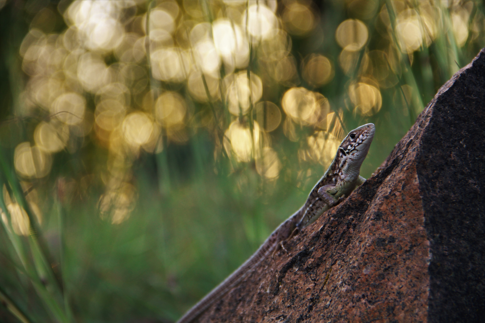
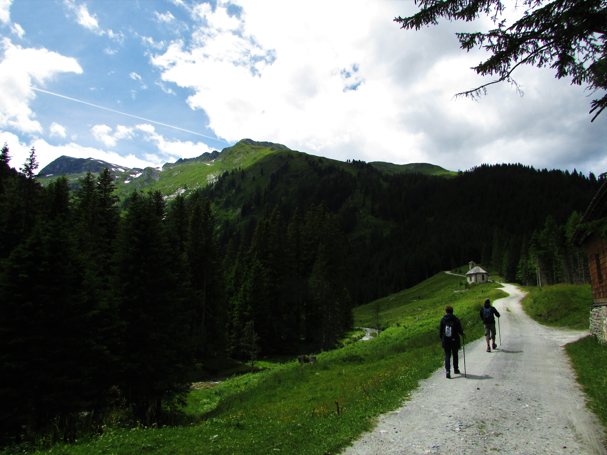
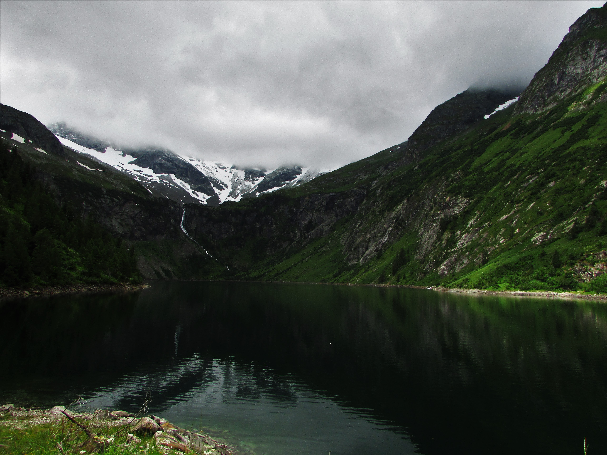

Munkáim
Ezen az oldalon látható egy kis ízelítő a munkáimból. A természet és étel fotók, amik dominálnak, mivel ezek a kedvenc témáim, de ahogy már említettem szívesen készítek fotót más témákban is, mint például portré, város.
Természet fotóim





Étel fotóim